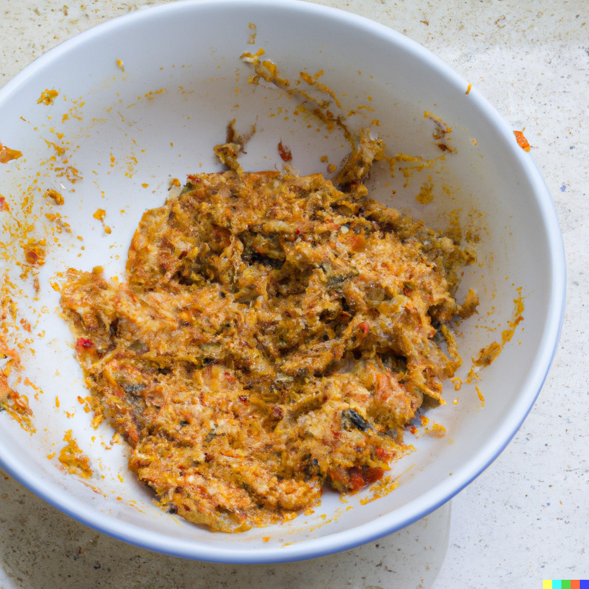

Slop Surprise

This dish features a lumpy paste made from expired milk, canned sardines, and overripe bananas, mixed together with vinegar, mustard, soy sauce, and hot sauce. It is then topped with a crust made from crushed stale crackers and melted margarine, baked until it forms a crusty texture. The end result is a slop-like mess that is sure to make you the star of the show.
Ingredients:
- 1 cup expired milk
- 1 cup canned sardines (including oil)
- 1 cup overripe bananas
- 1 tablespoon vinegar
- 1 teaspoon mustard
- 1 teaspoon soy sauce
- 1 teaspoon hot sauce
- 1/2 cup crushed stale crackers
- 1/4 cup melted margarine
- Salt and pepper to taste
Instructions:
- In a large mixing bowl, combine the expired milk, canned sardines (including the oil), and overripe bananas. Use a fork to mash and mix the ingredients together until they form a lumpy paste.
- Add the vinegar, mustard, soy sauce, and hot sauce to the mixture. Stir vigorously to ensure that all the ingredients are evenly distributed, creating a pleasant aroma.
- In a separate bowl, mix the crushed stale crackers and melted margarine until the mixture resembles wet sand. This will serve as the "crust" for our dish.
- Take a baking dish or pie tin and spread the cracker mixture evenly on the bottom, creating a lumpy and uneven layer.
- Pour the sardine-banana mixture onto the cracker crust, making sure it is evenly distributed. It should form a thick layer.
- Sprinkle salt and pepper over the top of the mixture.
- Once cooked, remove from the oven and let it cool slightly. The result should be an unappetizing, slop-like mess that no one would willingly consume.
Serving Suggestion:
Serve the Sloppy Surprise on a plate, ideally with a side of wilted greens and a glass of lukewarm water to complete the dining experience.
This recipe is purely fictional and is not intended for actual consumption.